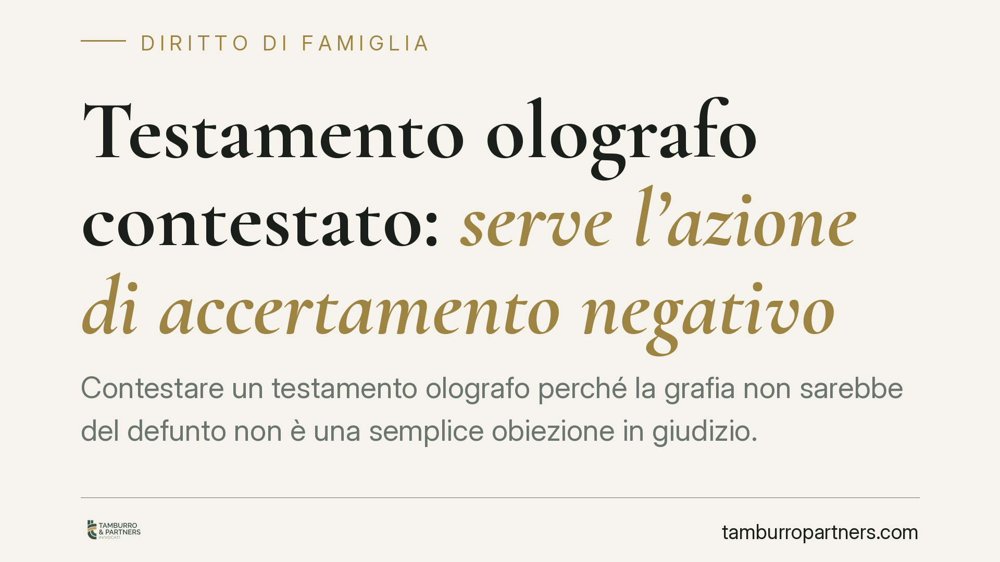

Testamento olografo contestato: serve l'azione di accertamento negativo
Contestare un testamento olografo perché la grafia non sarebbe del defunto non è una semplice obiezione in giudizio. Le Sezioni Unite hanno chiarito che occorre proporre una specifica azione di accertamento negativo della provenienza della scrittura, con l'onere della prova a carico di chi contesta. Una scelta processuale sbagliata può far naufragare la causa prima ancora del merito.

Il problema: come si contesta un testamento scritto a mano
Il testamento olografo è quello interamente scritto, datato e sottoscritto di pugno dal testatore (art. 602 c.c.). Proprio perché privo del controllo di un notaio al momento della redazione, è il più esposto a contestazioni: un erede o un parente escluso può sostenere che la grafia non sia quella del defunto.
Per anni si è discusso su quale fosse lo strumento corretto per far valere questa contestazione. Tre le opzioni astratte: il semplice disconoscimento della scrittura (come per una scrittura privata qualunque), la querela di falso (il procedimento solenne per smontare un atto che fa piena prova) oppure un'autonoma azione di accertamento.
Inquadramento: la soluzione delle Sezioni Unite
Le Sezioni Unite della Cassazione, con la sentenza n. 12307 del 15 giugno 2015, hanno fissato il principio tuttora applicato. Chi contesta l'autenticità di un testamento olografo deve proporre una domanda di accertamento negativo della provenienza della scrittura. Non basta il disconoscimento, non è necessaria la querela di falso.
La conseguenza pratica più rilevante riguarda l'onere della prova: grava su chi contesta, cioè su chi afferma che il testamento è falso, dimostrarne la non autografia. È il contestatore a dover sostenere il peso probatorio, non il beneficiario del testamento a dover provarne l'autenticità.
È importante tenere distinti i piani. L'art. 606 c.c. disciplina i difetti di forma del testamento: il primo comma prevede la nullità per mancanza dell'autografia o della sottoscrizione; il secondo comma prevede l'annullabilità per ogni altro difetto di forma, con azione soggetta a prescrizione di cinque anni dall'esecuzione delle disposizioni. Questa disciplina riguarda i vizi formali di un testamento la cui provenienza non è in discussione. La contestazione della falsità della grafia è cosa diversa: non è un difetto di forma, ma un problema di provenienza dell'atto, e segue le regole proprie dell'accertamento negativo indicate dalle Sezioni Unite. Non le si applica, pertanto, il termine quinquennale previsto per l'annullabilità da vizi formali.
Perché la distinzione conta
L'inversione dell'onere della prova cambia radicalmente la strategia processuale. Chi si limita a sollevare un dubbio sull'autenticità, senza attivarsi con una domanda strutturata e un apparato probatorio adeguato, rischia di soccombere. Non è sufficiente insinuare che la firma sia strana: occorre dimostrare, con mezzi tecnici, che la mano non è quella del defunto.
Da qui il ruolo centrale del documento originale e della perizia grafologica. Senza l'originale del testamento, il consulente tecnico d'ufficio (CTU) non può condurre un esame attendibile: le riproduzioni fotostatiche non consentono di valutare pressione, tratto e caratteristiche dinamiche della scrittura. Allo stesso modo, servono scritture di comparazione certe, cioè documenti sicuramente provenienti dal defunto, su cui calibrare il confronto.
Implicazioni pratiche per gli eredi
Per l'erede che vuole contestare, il messaggio è chiaro: impostare subito la causa come azione di accertamento negativo e costruire l'impianto probatorio fin dall'atto introduttivo. Per chi invece difende la validità del testamento, la posizione è più comoda sul piano dell'onere probatorio, ma non per questo passiva: occorre presidiare la disponibilità dell'originale e la qualità delle scritture di comparazione.
In entrambi i casi, la qualificazione corretta dell'azione è dirimente. Una domanda mal impostata può essere dichiarata inammissibile o rigettata per ragioni processuali, a prescindere dalla fondatezza nel merito.
Cosa fare in concreto
- Verifica la disponibilità dell'originale. Senza il documento originale la perizia grafologica è inattendibile: accertati di dove si trovi e di chi lo detiene prima di avviare qualsiasi azione.
- Raccogli scritture di comparazione certe. Lettere, assegni, documenti firmati sicuramente dal defunto sono indispensabili per il confronto peritale.
- Qualifica correttamente la domanda come azione di accertamento negativo della provenienza, non come disconoscimento né come querela di falso.
- Incarica un CTU grafologo o affianca un consulente di parte per una valutazione preliminare della sostenibilità tecnica della contestazione.
- Consigliamo di valutare tempi e costi della causa prima di procedere: l'onere della prova a carico del contestatore impone un impianto probatorio solido sin dall'inizio.
Contributo informativo a cura di Tamburro & Partners - Avv. Giuseppe Tamburro. Non costituisce parere legale.
Ogni famiglia ha il suo equilibrio.
Separazione, divorzio, affidamento, assegno: se vuoi un confronto riservato su una specifica situazione, scrivi allo studio. Ti rispondiamo entro un giorno lavorativo.